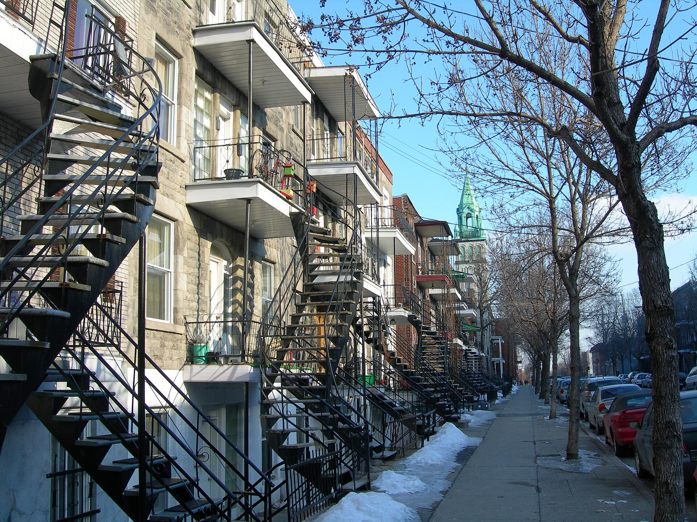
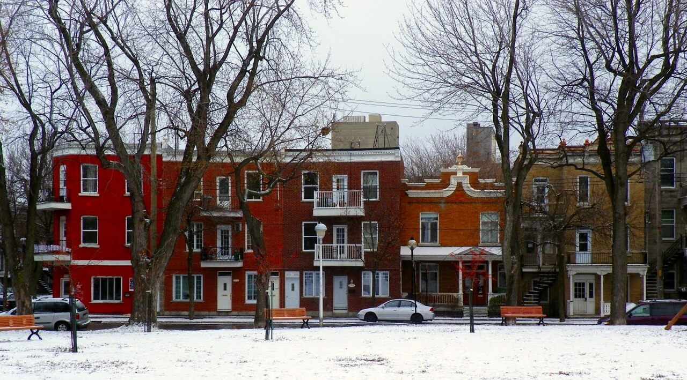

Three-storey workers' plex L'habitation ouvrière de trois étages (« plex »)

"La rue Dézéry à Hochelaga-Maisonneuve (entre la rue De Rouen et la rue Ontario), Montréal" by Atilin, 11 February 2006, Wikimedia Commons, CC BY-SA 3.0 — licence read on the Commons API before download. File: https://commons.wikimedia.org/wiki/File:HochMais.JPG

"Alignment of houses in Hochelaga (Adam Street), as seen from Saint-Aloysius Park" by Félix Mathieu-Bégin (User:Webfil), 29 November 2012, Wikimedia Commons, CC BY-SA 4.0 — licence read on the Commons API before download. File: https://commons.wikimedia.org/wiki/File:Maisons_du_quartier_Hochelaga.jpg
What Maisonneuve's workers actually lived in. Three storeys of grey limestone or clay brick under a flat roof, one dwelling to a floor, each with its own door off the street and the upper doors reached by an iron stair curving up out of the front yard — repeated down both sides of a street planted with trees. The Évaluation gives it one clause and no fiche, which is the point: the ambition at Maisonneuve went into the civic buildings and the boulevard, and the housing was the standard Montréal product.
The form arrives with the industry. Hochelaga's mills — the W.C. McDonald tobacco works, the Abattoirs de l'Est, the V. Hudon cotton mills and the Filature Sainte-Anne, all established between 1871 and 1881 — drew what the cahier calls « une main-d'œuvre bon marché issue des populations agricoles qui convergent vers la ville », and « les terrains sont lotis sans réglementation particulière ». At Maisonneuve after 1883 the promoters offered huge cheap lots and tax exemptions to industry, and the population went from about 350 at the founding to 2,000 in 1896 and roughly 18,000 in 1911 — 80 % francophone and « composée surtout de travailleurs et de locataires ». Renters in a boom is what the plex is for. Maisonneuve also enacted a zoning by-law that the cahier calls « une nouveauté à l'époque », barring shops and industry from certain streets reserved for housing alone — one of the earliest use-separation controls in Québec, and the reason these streets read as purely residential while rue Ontario Est a block away does not.
| Tenure / plan | triplex |
|---|---|
| Storeys | 3 |
| Roof form | flat |
| Roof pitch | 0° |
| Window proportion | vertical |
| Principal cladding | grey-limestone, clay-brick-red-brown |
| Roofing | – |
| Garage | none |
| Lot width | – |
| Front setback | – |
| Side setback | 0 m |
| Front yard green | – |
What Évaluation du patrimoine urbain (2005) says about this type
- Continuous alignments along tree-lined streets — the Évaluation names the trees twice, in the sector fiche (« le long de rues bordées d'arbres ») and in its overview of the borough's residential heritage.
- In Hochelaga the first such streets are Moreau, Dézéry and Saint-Germain, settled directly around the deep-water port and the Notre-Dame rail lines; in Maisonneuve the sector runs east to Viauville, between rues Sicard and Viau.
- Three storeys, one dwelling to a floor, under a flat roof.
- Front balcony at each upper level, and an exterior stair climbing to the upper doors so that every dwelling keeps its own entrance from the street.
- Crown treated as a distinct element — the borough's conservation guide governs « couronnement » as its own category, in worked and painted wood, worked painted metal, or brick laid in a distinctive bond, plus false mansards and dômes in natural slate, fish-scale metal or tôle à la canadienne.
- Openings framed by a lintel of brick laid as a shallow-arched soldier course, of stone, or of concrete with a moulded relief, over a stone or concrete sill 5 to 6 inches high.
- Vertical openings; for pre-1940 buildings the guide prescribes double-hung sashes at 1/2–1/2 or 2/5–3/5, or casements at 1/3–2/3 or 2/5–3/5 with a fixed upper light, glazed in uniform clear or frosted glass without muntins or patterns.
- Principal door with a glazed panel 42 to 54 inches high, and a secondary balcony door glazed 36 to 42 inches, which may carry the traditional Montréal muntin pattern.
- The Évaluation's own words for the borough's residential heritage — « plex » en pierre ou en brique. Grey limestone, smooth-faced or rock-faced, and clay brick in red, brown, beige, orange or polychrome, plus glazed brick.
- Stair, balcony guard and stringer in steel, wrought iron or welded aluminium, painted; natural galvanised steel is prohibited as a non-original component. Balcony floors in tongue-and-groove wood or composite board, boards no wider than 6 inches, on a bipartite wooden fascia with a slatted wooden soffit.
This is the record the brief's warning is about, so it says plainly what the documents say and what they do not. NO DISTINCT « MAISON-MODÈLE » FOR MAISONNEUVE IS DOCUMENTED. The word « modèle » does occur in the cahier, but not of a house: sector 27.E.2 calls the municipality itself « la cité-modèle de Maisonneuve », and the only model house named anywhere in the document is « le modèle des maisons de la Wartime Housing Limited » in sector 27.U.1, which is a 1950 federal type in Mercier and has nothing to do with the cité. What the cité's workers lived in is the ordinary Montréal plex — three storeys and a rangée of them, one dwelling to a floor, and the Évaluation's whole description of it is a single clause: « les habitations ouvrières de trois étages le long de rues bordées d'arbres », supported by its overview line, « un patrimoine résidentiel composé de "plex" en pierre ou en brique le long de rues bordées d'arbres ». Neither document gives dwelling counts or stair positions per building, so this record attaches to the canonical family rather than to one of its seven members: the same street can hold a duplex, a triplex and a multiplex without the fiches distinguishing them. The exterior stair is not named in the Évaluation at all; it is carried here from the borough's own Guide patrimonial, which regulates « escalier courbe » and adds the note « les escaliers traditionnels (typiquement montréalais) doivent être conservés et maintenus en bon état », and it is visible along the whole photographed alignment on rue Dézéry. Every articulation, opening and material line likewise comes from the Guide's prescriptive tables for « secteur significatif » and « immeuble significatif » — that is, from what the borough will today allow to be rebuilt, which is its reading of what was originally there.
The exterior stair — why it is outside
Same word elsewhere
- Plex — superposed dwellings (Québec City)
- Immeuble à logements — the plex of superposed flats (Trois-Rivières)
- Three-storey plex with exterior stair (Verdun (borough of Montréal))
- National Housing Act house — 1½ storeys, brick, to prize-winning plans (Verdun (borough of Montréal))
- Plex of the early 20th century (Villeray–Saint-Michel–Parc-Extension)
- Plex of the mid-20th century (Villeray–Saint-Michel–Parc-Extension)
- Plex of the second half of the 20th century — the « plex italien » (Villeray–Saint-Michel–Parc-Extension)
Same form elsewhere
- Flat-roofed house (Lévis)
- Plex — superposed dwellings (Québec City)
- Triplex with exterior stair (Rosemont–La Petite-Patrie (borough of Montréal))
- Duplex with exterior stair (Rosemont–La Petite-Patrie (borough of Montréal))
- Duplex with interior stair and paired entrances (Rosemont–La Petite-Patrie (borough of Montréal))
- Semi-detached duplex with rear garage, Art déco manner (Rosemont–La Petite-Patrie (borough of Montréal))
- Duplex with interior stair (Le Sud-Ouest (Montréal))
- Three-storey duplex (Le Sud-Ouest (Montréal))
- Triplex with interior stair (Le Sud-Ouest (Montréal))
- Duplex with exterior stair (Le Sud-Ouest (Montréal))
- Multiplex (Le Sud-Ouest (Montréal))
- Raised duplex (Le Sud-Ouest (Montréal))
- Triplex with exterior stair (Le Sud-Ouest (Montréal))
- Immeuble à logements — the plex of superposed flats (Trois-Rivières)
- Two semi-detached duplexes, or a three-dwelling building, with deep front balconies (Verdun (borough of Montréal))
- Row duplex of the 1950s (Verdun (borough of Montréal))
- Plex of the early 20th century (Villeray–Saint-Michel–Parc-Extension)
- Plex of the mid-20th century (Villeray–Saint-Michel–Parc-Extension)
- Plex of the second half of the 20th century — the « plex italien » (Villeray–Saint-Michel–Parc-Extension)
Same period elsewhere
- Family A company houses (models A1–A8) (Arvida (borough of Jonquière, Saguenay))
- Family B company houses (models B1–B4) (Arvida (borough of Jonquière, Saguenay))
- Family C company houses (models C1–C6) (Arvida (borough of Jonquière, Saguenay))
- Family D company houses (models D1–D5) (Arvida (borough of Jonquière, Saguenay))
- Québec house of neoclassical inspiration (Charlesbourg (Trait-Carré))
- Mansard house (Charlesbourg (Trait-Carré))
- Boomtown building (Charlesbourg (Trait-Carré))
- Cubic house (Four Square) (Charlesbourg (Trait-Carré))
- Industrial vernacular house (Charlesbourg (Trait-Carré))
- Vernacular cottage (Charlesbourg (Trait-Carré))
- English summer villa on the lake shore (Dorval)
- Mixed-use building with a flat roof (édifice mixte à toit plat) (Gatineau)
- Side-gable duplex (duplex à mur pignon latéral) (Gatineau)
- Central-gable house (maison à pignon central) (Gatineau)
- Complex gabled-roof house (maison à toit complexe à pignon) (Gatineau)
- Mansard-roofed house with gable wall on the façade (maison à toit mansardé avec mur pignon en façade) (Gatineau)
- One-and-a-half-storey wooden matchstick house (maison allumette en bois d'un étage et demi) (Gatineau)
- Wood matchstick house of two to two and a half storeys (maison allumette en bois de deux à deux étages et demi) (Gatineau)
- Brick matchbox house, two to two and a half storeys (maison allumette en brique de deux à deux étages et demi) (Gatineau)
- Cubic house (maison cubique) (Gatineau)
- CIP executive's house (maison de cadre de la CIP) (Gatineau)
- Flat-roofed wood house (maison en bois à toit plat) (Gatineau)
- Flat-roofed brick house (maison en brique à toit plat) (Gatineau)
- L-plan house with a two-slope (gable) roof (maison avec plan en L à toit à deux versants) (Gatineau)
- English-revival stone house (Hampstead)
- Regency cottage (Île d'Orléans)
- Second Empire style and the mansard house (Île d'Orléans)
- Victorian eclecticism (Île d'Orléans)
- American vernacular cottage (Île d'Orléans)
- Arts and Crafts architecture (Île d'Orléans)
- Boomtown house (Île d'Orléans)
- Cubic house (Four Square) (Île d'Orléans)
- Bourgeois brick house in the Victorian taste (Lachine (borough of Montréal))
- Brick duplex and triplex, detached or in continuous alignment (Lachine (borough of Montréal))
- Small one-storey brick house, wider than deep, with a crown (Lachine (borough of Montréal))
- Second Empire house (Lévis)
- Victorian house (Lévis)
- American vernacular house (Lévis)
- Mixed-use or commercial building (Lévis)
- Beaux-Arts house (Lévis)
- Boomtown house (Lévis)
- Cubic house (maison cubique) (Lévis)
- Flat-roofed house (Lévis)
- Arts & Crafts house (Arts & métiers) (Lévis)
- Garden City House (Town of Mount Royal)
- Faubourg House (Town of Mount Royal)
- Faubourg Apartment Block (Town of Mount Royal)
- Semi-detached single-family house (Outremont (borough of Montréal))
- Semi-detached duplex (Outremont (borough of Montréal))
- Detached single-family house (Outremont (borough of Montréal))
- Opulent detached residence (Outremont (borough of Montréal))
- Faubourg house (Le Plateau-Mont-Royal (borough of Montréal))
- Detached urban house (Le Plateau-Mont-Royal (borough of Montréal))
- Duplex without front setback (Le Plateau-Mont-Royal (borough of Montréal))
- Duplex with front setback (Le Plateau-Mont-Royal (borough of Montréal))
- Duplex with exterior stair (Le Plateau-Mont-Royal (borough of Montréal))
- Triplex with interior stair (Le Plateau-Mont-Royal (borough of Montréal))
- Triplex with exterior stair (Le Plateau-Mont-Royal (borough of Montréal))
- Multiplex (Le Plateau-Mont-Royal (borough of Montréal))
- Row urban house (Le Plateau-Mont-Royal (borough of Montréal))
- Apartment block without courtyard (Le Plateau-Mont-Royal (borough of Montréal))
- Apartment block with courtyard (Le Plateau-Mont-Royal (borough of Montréal))
- Small apartment building (Le Plateau-Mont-Royal (borough of Montréal))
- Cubique — massive symmetrical block, imposing gallery, low hipped roof (Pointe-Claire)
- Village Boomtown house, two storeys, flat or low-pitch roof behind a crown (Pointe-Claire)
- Neo-Gothic house, villa or cottage (Québec City)
- Québécois neoclassical house (Québec City)
- Regency cottage (Québec City)
- Regency villa (Québec City)
- Mansard-roofed house (Québec City)
- Rudimentary faubourg house (Québec City)
- Boomtown house and shop-house (Québec City)
- Cubic house (Four Square) (Québec City)
- Flat-roofed faubourg house (Québec City)
- Industrial-vernacular cottage (Québec City)
- Neo-Queen Anne house (Québec City)
- Neo-Renaissance house and mixed-use block (Québec City)
- Neo-Tudor house (Québec City)
- Plex — superposed dwellings (Québec City)
- Apartment block with a central stairwell (Québec City)
- Arts and Crafts house (Québec City)
- Bungalow (Québec City)
- Camp and villégiature chalet (Québec City)
- Dutch Colonial Revival house (Québec City)
- International Style house (residential) (Québec City)
- Neo-Georgian house (Québec City)
- Prairie house (Frank Lloyd Wright inspiration) (Québec City)
- Wartime Housing house (Cape Cod) (Québec City)
- Maison shoebox (Rosemont–La Petite-Patrie (borough of Montréal))
- Triplex with exterior stair (Rosemont–La Petite-Patrie (borough of Montréal))
- Duplex with exterior stair (Rosemont–La Petite-Patrie (borough of Montréal))
- Duplex with interior stair and paired entrances (Rosemont–La Petite-Patrie (borough of Montréal))
- Conciergerie (Rosemont–La Petite-Patrie (borough of Montréal))
- Mansard-roofed house of Second Empire influence (Saint-Lambert)
- Queen Anne style house (Saint-Lambert)
- Boomtown house with false mansard (Saint-Lambert)
- Boomtown house with crown (parapet or cornice) (Saint-Lambert)
- Cubic (Four Square) house (Saint-Lambert)
- House of Arts and Crafts influence (Saint-Lambert)
- Multi-dwelling building of plex type (Saint-Lambert)
- Two-storey clapboard village house of the îlot villageois (Sainte-Anne-de-Bellevue)
- Garden City Press workers' house (Sainte-Anne-de-Bellevue)
- English summer villa on the lake shore (Senneville)
- Arts and Crafts country estate (Senneville)
- Boomtown house (Le Sud-Ouest (Montréal))
- Duplex with interior stair (Le Sud-Ouest (Montréal))
- Three-storey duplex (Le Sud-Ouest (Montréal))
- Triplex with interior stair (Le Sud-Ouest (Montréal))
- Urban house (Le Sud-Ouest (Montréal))
- Apartment house (Le Sud-Ouest (Montréal))
- Duplex with exterior stair (Le Sud-Ouest (Montréal))
- Multiplex (Le Sud-Ouest (Montréal))
- Raised duplex (Le Sud-Ouest (Montréal))
- Triplex with exterior stair (Le Sud-Ouest (Montréal))
- Lower-town company house (Ross and Macdonald, 1918–1923) (Témiscaming)
- Upper-district company house (Somerville, 1925–1950) (Témiscaming)
- Maison cossue of rue Saint-Louis (Vieux-Terrebonne)
- Neoclassical Québécois stone house (Vieux-Terrebonne)
- Small-gabarit vernacular village house of the Bas-de-la-Côte (Vieux-Terrebonne)
- Well-to-do bourgeois house in stone and brick (maison cossue) (Trois-Rivières)
- The 1908 reconstruction block — brick, flat-roofed, built all at once (Trois-Rivières)
- Boomtown house (Trois-Rivières)
- Immeuble à logements — the plex of superposed flats (Trois-Rivières)
- Cubic house (Four-square) (Trois-Rivières)
- Arts & Crafts house (Trois-Rivières)
- Three-storey plex with exterior stair (Verdun (borough of Montréal))
- Two semi-detached duplexes, or a three-dwelling building, with deep front balconies (Verdun (borough of Montréal))
- Three-storey commercial block with dwellings above and alcove balconies (Verdun (borough of Montréal))
- Maison-magasin and warehouse with dwellings above (Ville-Marie (Montréal))
- Freestanding greystone mansion (Ville-Marie (Montréal))
- Greystone terrace (Ville-Marie (Montréal))
- Workers' house with carriage gate (Ville-Marie (Montréal))
- Rural or village house (Villeray–Saint-Michel–Parc-Extension)
- Shoebox of the early 20th century (Villeray–Saint-Michel–Parc-Extension)
- Boomtown house (Villeray–Saint-Michel–Parc-Extension)
- Plex of the early 20th century (Villeray–Saint-Michel–Parc-Extension)
- Apartment building of the early 20th century — the conciergerie (Villeray–Saint-Michel–Parc-Extension)
- Picturesque villa and country house (Westmount)
- Greystone row house (Westmount)
- Greystone triplex with exterior stair (Westmount)
- Mansard-roofed house of Second Empire influence (Westmount)
- Queen Anne house (Westmount)
- Richardsonian Romanesque house (Westmount)
- Semi-detached brick house (Westmount)
- Eclectic prestige house of the summit (Westmount)
- Tudor Revival house (Westmount)
- Arts and Crafts semi-detached house (Westmount)
- Interwar apartment house (Westmount)
Same style elsewhere
- Brick duplex and triplex, detached or in continuous alignment (Lachine (borough of Montréal))
- Small one-storey brick house, wider than deep, with a crown (Lachine (borough of Montréal))
- Company workers' house of the Hudon mill, rue Saint-Germain (Mercier–Hochelaga-Maisonneuve (borough of Montréal))
- Shop-and-dwellings block on the commercial artery (Mercier–Hochelaga-Maisonneuve (borough of Montréal))
- Faubourg House (Town of Mount Royal)
- Faubourg house (Le Plateau-Mont-Royal (borough of Montréal))
- Duplex without front setback (Le Plateau-Mont-Royal (borough of Montréal))
- Duplex with front setback (Le Plateau-Mont-Royal (borough of Montréal))
- Duplex with exterior stair (Le Plateau-Mont-Royal (borough of Montréal))
- Triplex with interior stair (Le Plateau-Mont-Royal (borough of Montréal))
- Triplex with exterior stair (Le Plateau-Mont-Royal (borough of Montréal))
- Multiplex (Le Plateau-Mont-Royal (borough of Montréal))
- Rudimentary faubourg house (Québec City)
- Maison shoebox (Rosemont–La Petite-Patrie (borough of Montréal))
- Triplex with exterior stair (Rosemont–La Petite-Patrie (borough of Montréal))
- Duplex with exterior stair (Rosemont–La Petite-Patrie (borough of Montréal))
- Duplex with interior stair and paired entrances (Rosemont–La Petite-Patrie (borough of Montréal))
- Conciergerie (Rosemont–La Petite-Patrie (borough of Montréal))
- Multi-dwelling building of plex type (Saint-Lambert)
- Village house (Le Sud-Ouest (Montréal))
- Duplex with interior stair (Le Sud-Ouest (Montréal))
- Triplex with interior stair (Le Sud-Ouest (Montréal))
- Duplex with exterior stair (Le Sud-Ouest (Montréal))
- Multiplex (Le Sud-Ouest (Montréal))
- Triplex with exterior stair (Le Sud-Ouest (Montréal))
- Small-gabarit vernacular village house of the Bas-de-la-Côte (Vieux-Terrebonne)
- Three-storey plex with exterior stair (Verdun (borough of Montréal))
- Workers' house with carriage gate (Ville-Marie (Montréal))
- Greystone triplex with exterior stair (Westmount)